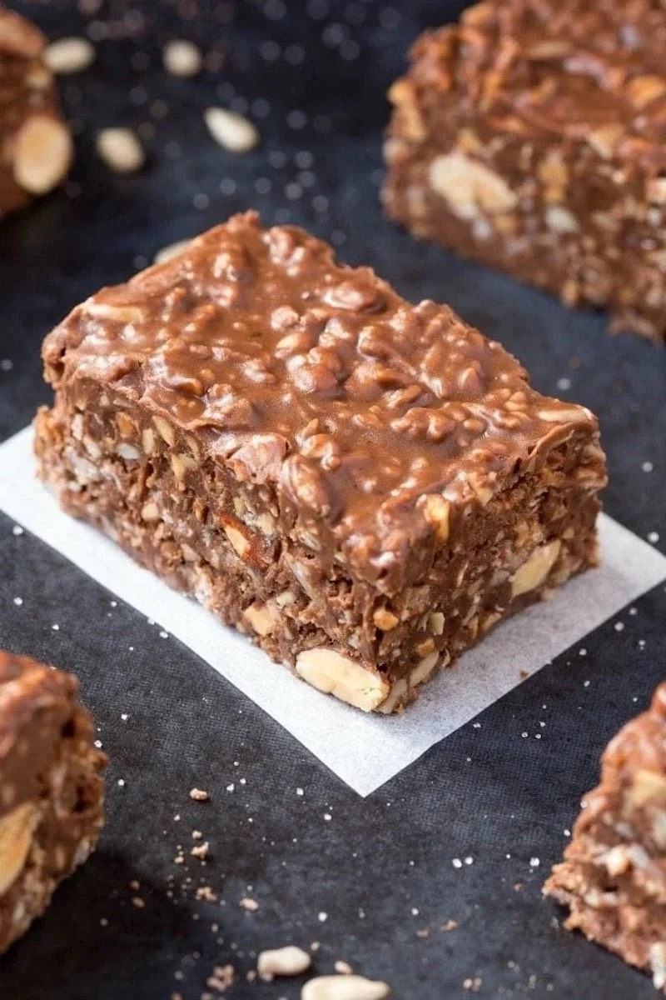

This delicious keto bar is only made of 3 ingredients.
Buying keto snacks and energy bars from specialty health food stores can
be very pricey and feel unsustainable for so so many of us with limited
budgets. Fortunately preparing keto snacks at home can be quite easy and
does not need to break the bank!
All you need for this recipe is baker's
chocolate, almond butter, and keto maple syrup. And I guarantee that your
taste buds will be thanking you for the small amount of time invested into
this kitchen endeavor. You will be hard pressed to find a commercial keto
bar that is this tasty. Recipe courtesy of
The Big Man's World website.
Ingredients
- 1.5 cups unsweetened chocolate
- 1 cup almond butter
- 1 cup keto maple syrup
- 1/4 cup coconut oil (optional)
- 3 cups nuts and seeds (optional)
Instructions
-
Line an 8 x 8-inch baking dish with parchment paper and set aside.
-
In a microwave-safe bowl or stovetop, combine your chocolate, almond
butter, sticky sweetener and optional coconut oil and melt until
combined.
- Add your nuts/seeds of choice and mix until fully combined.
-
Pour the chocolate mix into the lined baking dish and spread out
using a spatula. Refrigerate or freeze until firm.
- Slice into chocolate bars.
